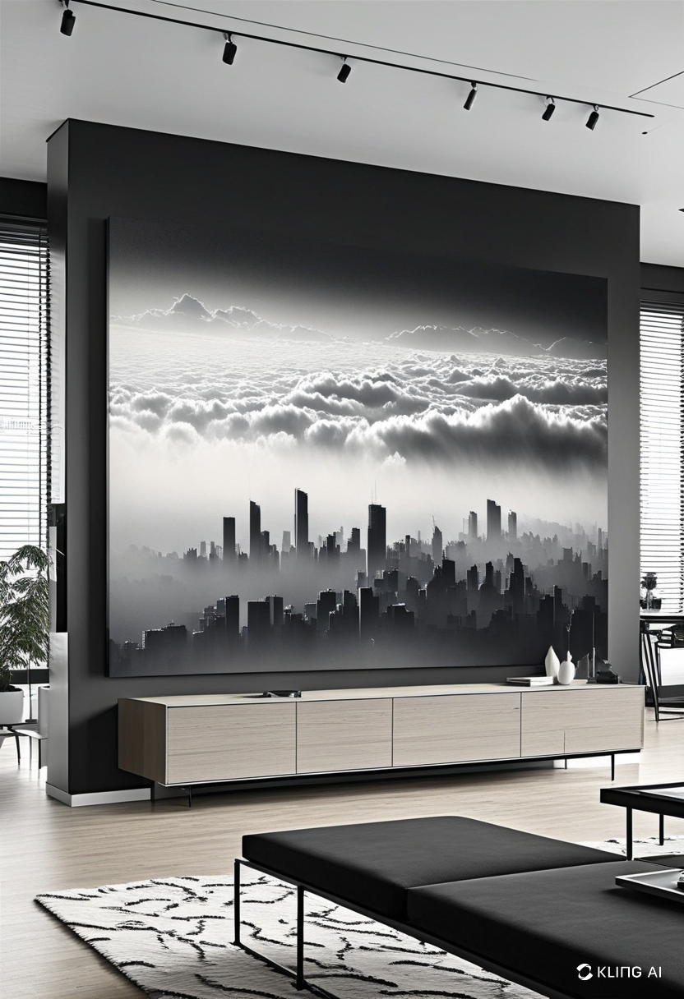
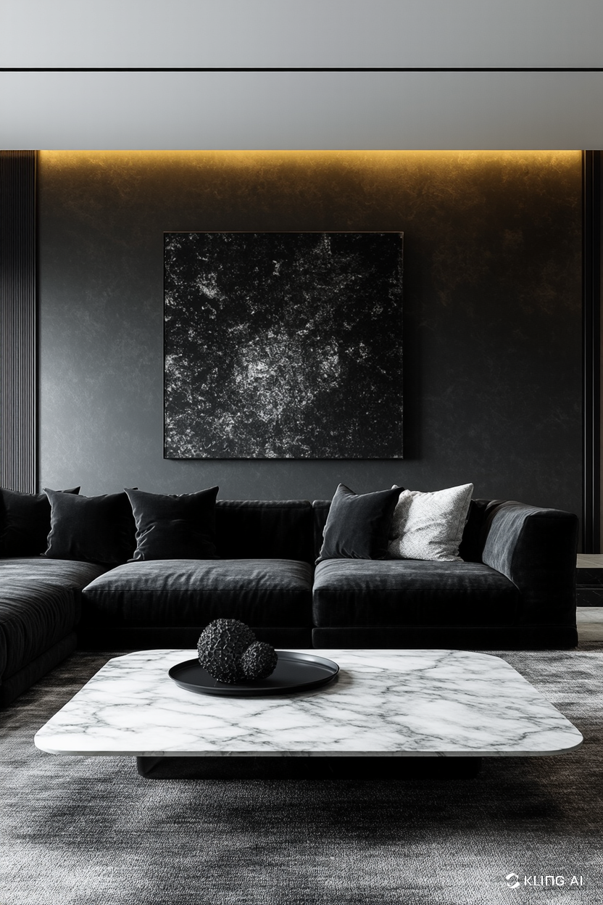
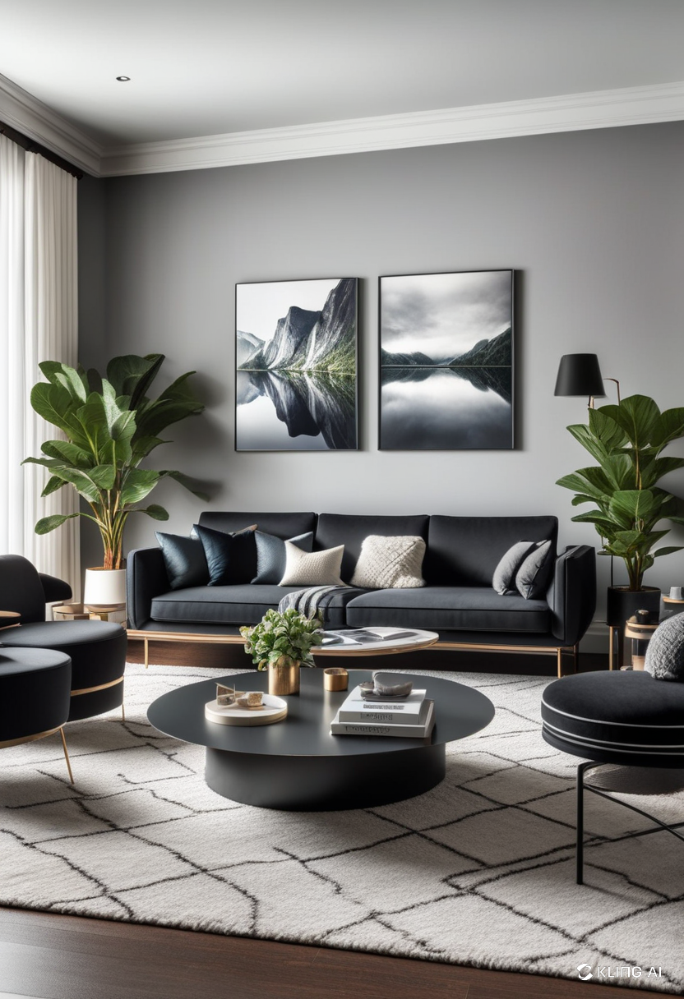
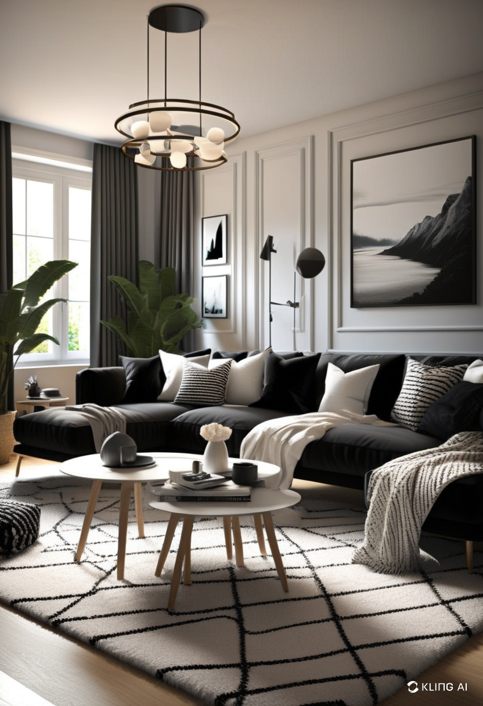

The black and white color scheme has long been a staple in interior design, exuding elegance, sophistication, and a modern aesthetic. Whether you are revamping your living room or starting from scratch, incorporating black and white decor can create a timeless and chic space that stands out with minimal effort. In this article, we will explore the key elements and tips to achieve the perfect black and white living room decor.
Black and white decor is all about contrast. The interplay between light and dark creates a striking visual effect that enhances the architectural features of your space. White reflects light, making the room appear larger and more open, while black adds depth and drama. This balance is essential in achieving a well-composed and stylish look.
When choosing furniture for a black and white living room, opt for sleek and modern pieces that complement the monochromatic theme. A black leather sofa paired with white accent chairs can create a refined and polished look. Alternatively, a white sectional with black throw pillows can offer a softer yet equally stylish appearance.
Glass and metal furniture pieces can further enhance the contemporary feel of the space. Consider incorporating a glass coffee table with black metal legs or a white marble-top side table to add a touch of luxury.
The walls and flooring serve as the foundation of any living room design. You can either opt for white walls with black trim to create a clean and crisp look or use a black accent wall to add depth and drama.
For flooring, black and white patterned tiles, such as a checkerboard design, can add a vintage charm to your space. If you prefer a more subtle approach, light-colored hardwood or whitewashed floors with black rugs can achieve a similar effect without overwhelming the room.
Accessories play a crucial role in bringing the black and white theme to life. Here are a few must-have decor elements:
- Throw Pillows and Blankets: Use a mix of solid and patterned cushions to add texture and dimension.
- Artwork: Black and white framed prints, abstract paintings, or monochrome photography can add personality to the space.
- Lighting: A statement chandelier, pendant lights, or black floor lamps with white shades can enhance the ambiance.
- Plants: Greenery adds a refreshing contrast to the monochromatic theme, breaking up the starkness of the black and white palette.
To prevent a black and white living room from looking too flat or sterile, incorporate different textures and patterns. Velvet cushions, shaggy rugs, and textured wallpapers can add depth and visual interest. Patterns such as stripes, geometric prints, or herringbone designs can further enhance the dynamic appeal of the room.
Black and white living room decor is a timeless and versatile choice that can be tailored to fit various styles, from modern and minimalist to classic and elegant. By balancing contrast, selecting the right furniture, and incorporating textures and accessories, you can create a living space that is both stylish and inviting. Embrace the power of black and white decor to transform your home into a sophisticated sanctuary.
   